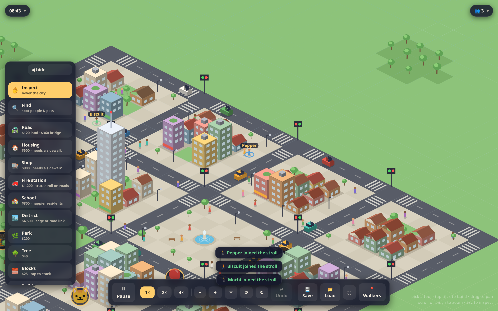
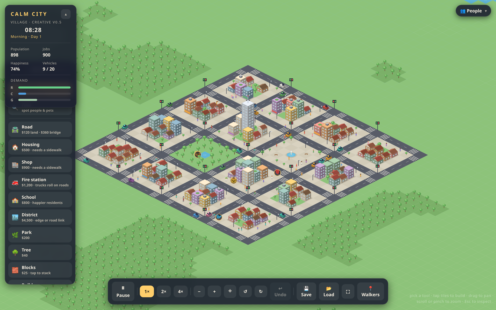

Build your layout
Roads, housing, shops, parks, schools, and fire stations on an infinite procedural map that goes on forever.
SimCity nostalgia meets Minecraft-style blocks — a cozy isometric town you can build in the browser. Pave roads, stack colorful cubes, add friends by name, and watch cars, walkers, and day-night life unfold. No install. No account required.
Works on phone, tablet, and desktop · Saves to your device

A living city sim without the chaos — build at your pace, explore forever, or just watch the town breathe.
Roads, housing, shops, parks, schools, and fire stations on an infinite procedural map that goes on forever.
Minecraft-style colored cubes — stack them up to 14 high with a palette of bright, friendly colors.
Add friends and family as walkers. Track them on the map or send them to the park, school, or fire station.
A gentle scavenger hunt — spot hidden critters, landmarks, and locals. Hints help when you're stuck.
Full sky cycle with dawn, dusk, streetlights, and headlights. Your city feels alive around the clock.
Grow spread-out districts linked by long roads — a whole region to explore, not just one square block.
No mockups — these are straight from the game. Cozy isometric blocks, living traffic, and named people wandering the streets.

Calm Safe City is E-rated at heart: cartoon fires at most, a calm mode that turns off random events entirely, and creative sandbox for stress-free building.
No app store. No signup wall. Just open and play.
Opens instantly in your browser — phone, iPad, or laptop.
Roads, parks, blocks, or inspect. Tap the map to build.
Add named walkers, save your city, and come back tomorrow.
Free to play. Save files export to your device. Cloud saves and leaderboards are on the roadmap.
▶ Start building